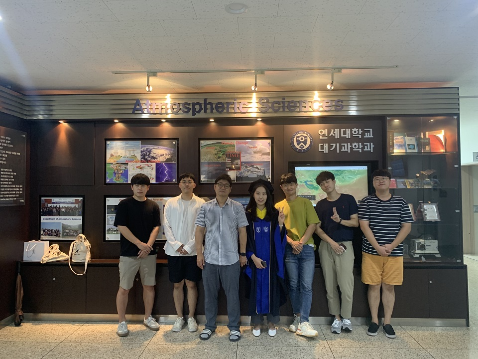
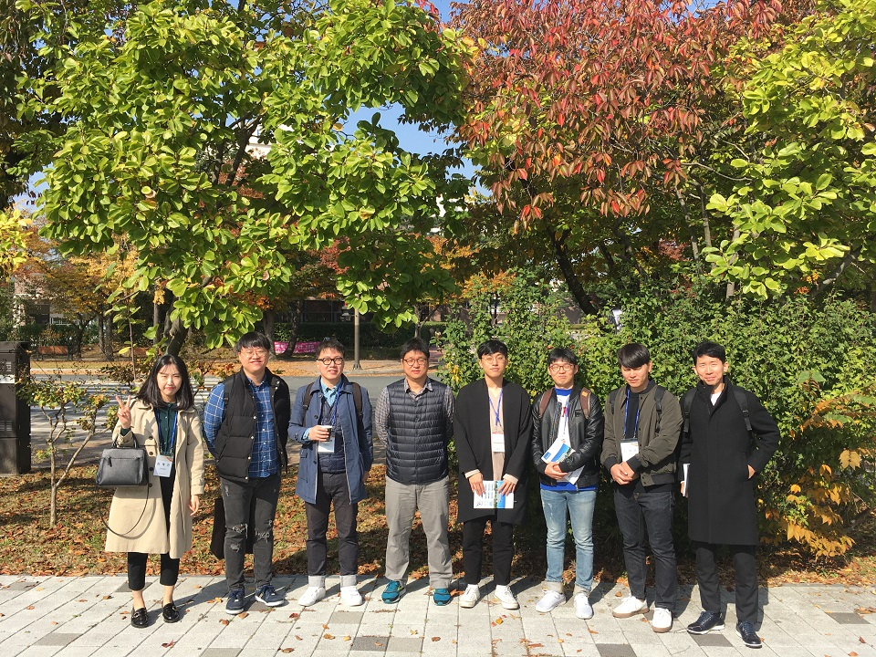
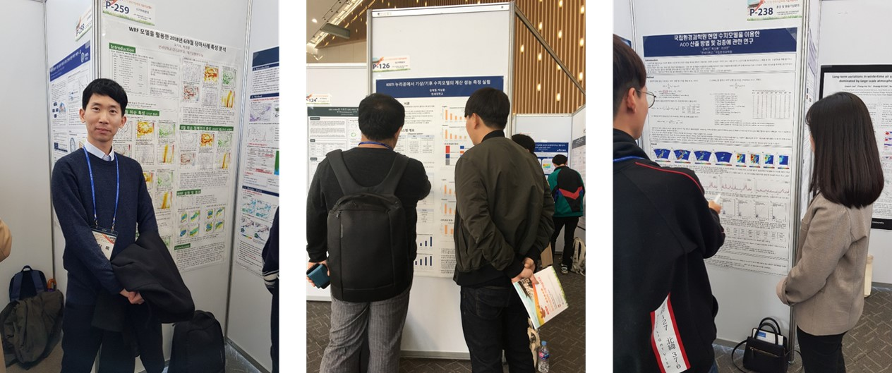
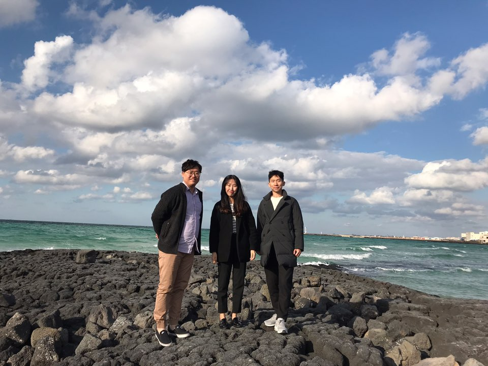

2020

2020년 8월 28일에 김혜진 학생(석사학위)이 졸업하였습니다. 축하합니다!
2020년 2월 24일에 오치묵 학생(석사학위)이 졸업하였습니다. 축하합니다!
아쉽지만 오치묵학생은 근무로 인하여 졸업행사에 참석하지 못하였습니다.
2019
 
경주에서 개최된 2019년 한국기상학회 가을학술대회에 참석하였습니다.
우리 연구실에서 발표한 발표자 및 주제는 아래와 같습니다.
오치묵: WRF 모델을 활용한 2018년 6/8월 장마사례 특성 분석
김재엽: KISTI 누리온에서 기상/기후 수치모델의 계산 성능 측정 실험
김혜진: 국립환경과학원 현업 수치모델을 이용한 AOD 산출 방법 및 검증에 관한 연구
2018
제주에서 개최된 2018년 한국기상학회 가을학술대회에 참석하였습니다.